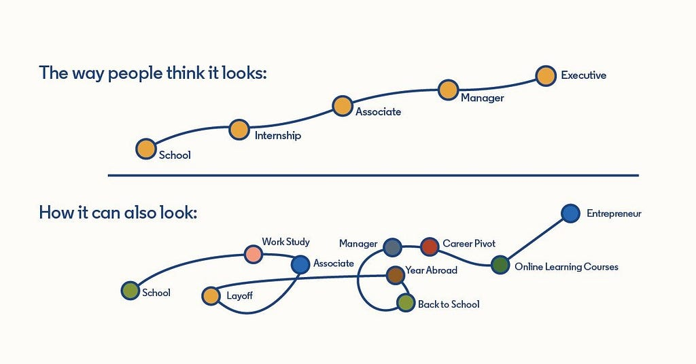

Great Career Advice from Dara Khosrowshahi (Uber CEO)
· Francis Awagu
On a productive Friday morning working from my home office in Stockholm Sweden, I bumped into this great interview with Ryan Roslansky speaking with Dara the current CEO of Uber
This post is a summary of my personal take ways from his interview:
- Have an idea of where you want to go
- Be open to opportunity
- do not over plan your career eg being fixated on wanting to be a VP
- As humans, we tend to ignore signals in the opposite direction when our ideas about the future are too narrow.
- Un-familiar path can lead to a rewarding place
- Don’t be too much in a hurry. Greatness takes time and it takes time to build your craft. “career compounding is magical”
Here is a link to the video/post on LinkedIn:
Credit: https://www.linkedin.com/feed/update/urn:li:activity:7021853781487169536/